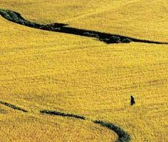

탐라국 입춘굿
탐라국 입춘굿은 입춘을 맞아 풍년을 기원하는 행사로, 제주도의 문화 축제 중에서 유일하게 탐라 시대부터 이어져 왔다.제주에서는 입춘을 새철이라 한다
신구간이 끝나 하늘의 1만 8,000 신이 지상으로 내려와 새해 일을 시작하는 때다.

일정
- 입춘맞이 : 1/27(월) ~ 1/31(금)
- 낭쉐코사 : 2/1(토)
- 거리굿 : 2/2(일)
- 열림굿 : 2/3(월)
- 입춘굿 : 2/4(화)
먹거리
| 입춘 천냥 국수 | 11:00 ~ 16:00 | 목관아 주차장 |
|---|---|---|
| 제주 향토 음식 | 10:30 ~ 17:00 | 관덕정 마당 |
| 입춘 주전부리 | 10:30 ~ 17:00 | 관덕정 마당 |
| 차 나눔 | 10:30 ~ 17:00 | 관덕정 마당 |